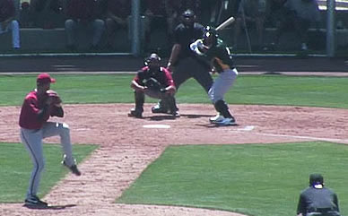

This is my web site and on my web site I tell the story of my strange path to professional baseball. It is an understatement to say my playing baseball at the high school, college and professional baseball was normal. However, I was drafted 26th Round MLB Draft - Arizona Diamondbacks in 2011. The Arizona Diamondbacks is a great organization. Here is how I got to play.
Copyright 2017 © - Site Designed by Richard Platt